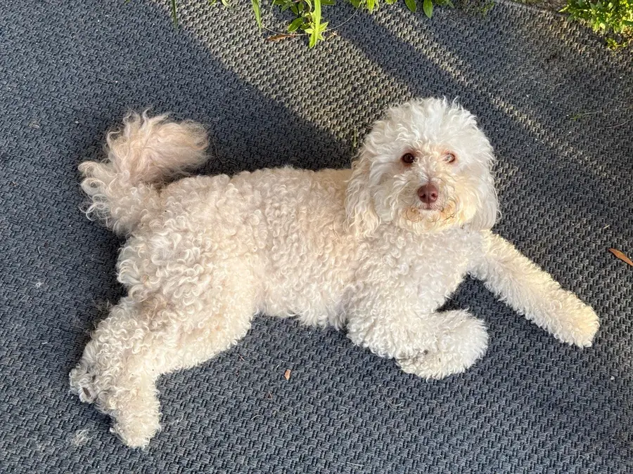
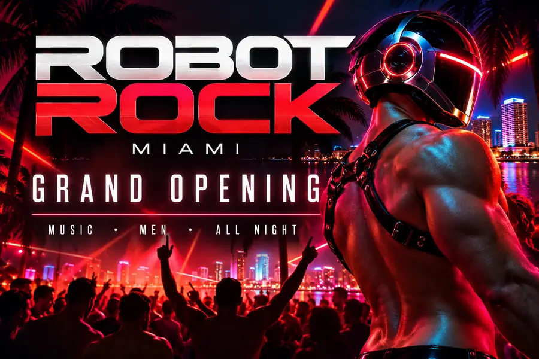

A real dogPhotographed by a person. No robots involved.
Hides AI-generated slop
A free browser extension for Chrome, Firefox and Edge.
See your feed without the slop
These are sample posts. The two flyers are real AI slop, made for this demo, and the dog is real. Press the button to see what Hide the Slop does.

Robot Rock grand opening#aiart #midjourney

A real dogPhotographed by a person. No robots involved.
Sunset Jazz NightMarked "AI content"
Hide posts marked as AI
Like the "AI content" and "AI info" labels on Facebook, Instagram, TikTok, YouTube and more.
Hide posts with AI tags
#aiart, #midjourney, "made with ChatGPT" and others like them. You can add your own words and accounts too.
Hide pictures with an AI note in the file
AI tools often leave a hidden note inside the pictures they make. This works on every site, though Facebook and Instagram remove those notes.
Hide anything you want
Rest your mouse on a big picture and press the Hide slop button.
Use your own robot to hide the clankers
Most AI pictures have no label. So you can turn on a small AI that runs on your computer and guesses which pictures are AI-made. It's off until you choose it, and it's a one-time 89 MB download.
It only looks: it never makes anything, and nothing is uploaded. Everything it hides keeps a Show button, and when it gets one wrong, you can teach it.
That's your robot at its default setting, with each picture tested by a version that had never seen it. It's a small test from real social feeds, and the settings were tuned on those same pictures, so real results may be a bit lower. Busy human-made flyers still fool it sometimes. That's why nothing gets hidden without a way to see it.
It works on your computer
There are no accounts, no analytics and no ads. What you browse isn't sent to anyone. Read the privacy policy.
Yes, if you turn on the picture check. It's robots catching robots. The difference is that your robot only looks at pictures and can't make anything. It runs on your computer, and the code is open for anyone to read.
Partly, and you should know that. Your robot is built on CLIP, a model OpenAI trained on a large set of images from the web. The small part that decides "AI or not" sits on top of CLIP and was trained on pictures sorted by hand.
Yes. It was made by Kevin Sousa and a clanker. Kevin came up with the idea and made the design decisions, and the clanker wrote much of the code. The logo combines two open-licensed icons, which are credited in the project.
Nothing. It's free and open source, with no subscription. There may be a way to chip in for server costs later if you want to.
Labels work on Facebook, Instagram, Threads, TikTok, YouTube and Pinterest. Tags work on those plus X, Reddit and LinkedIn. The file note check and your robot work on every site.
Yes. It will miss some slop and hide some real posts. Everything it hides leaves a thin bar with a Show button, and your corrections teach your robot.